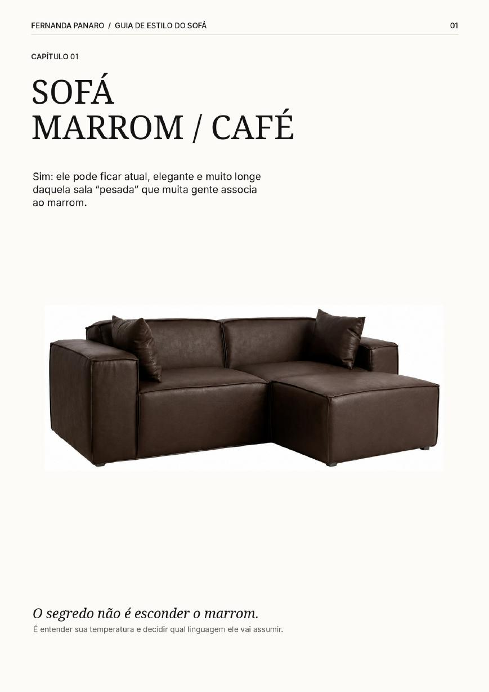
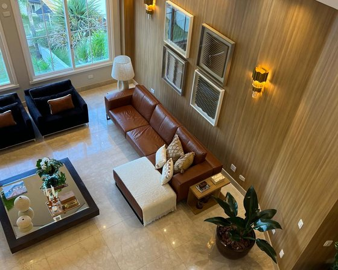
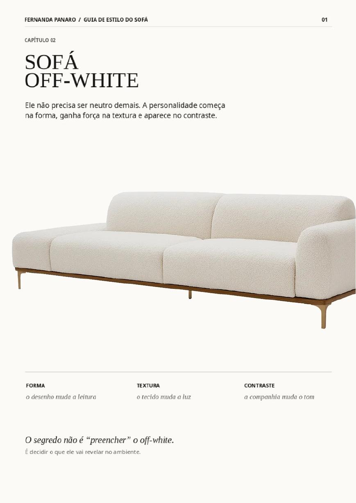
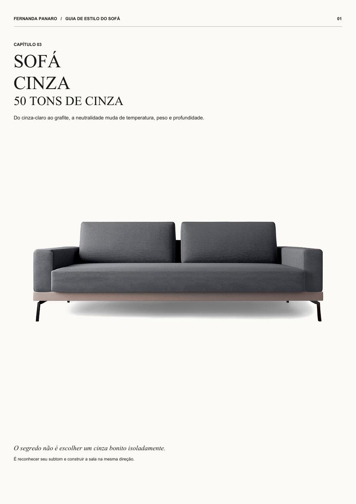
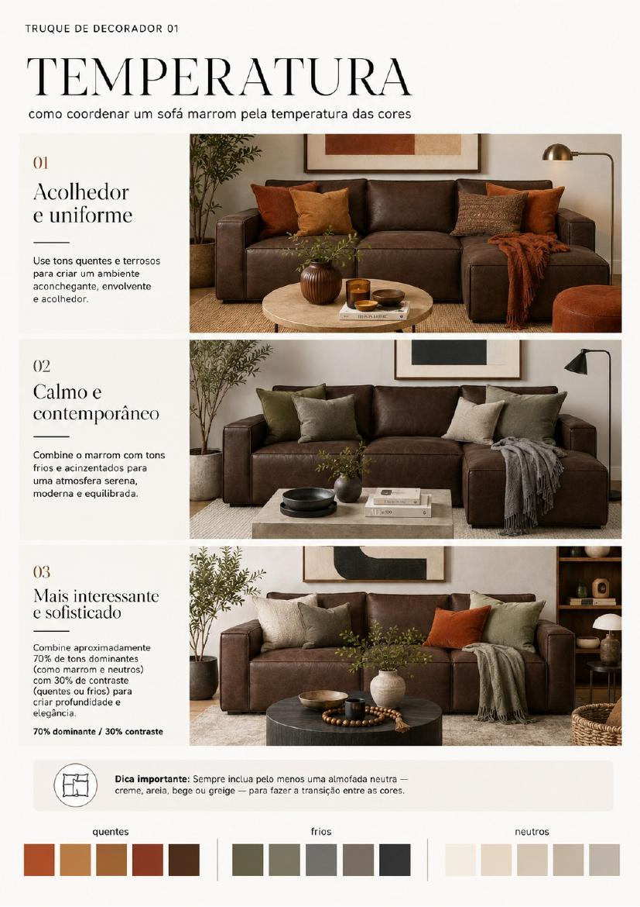
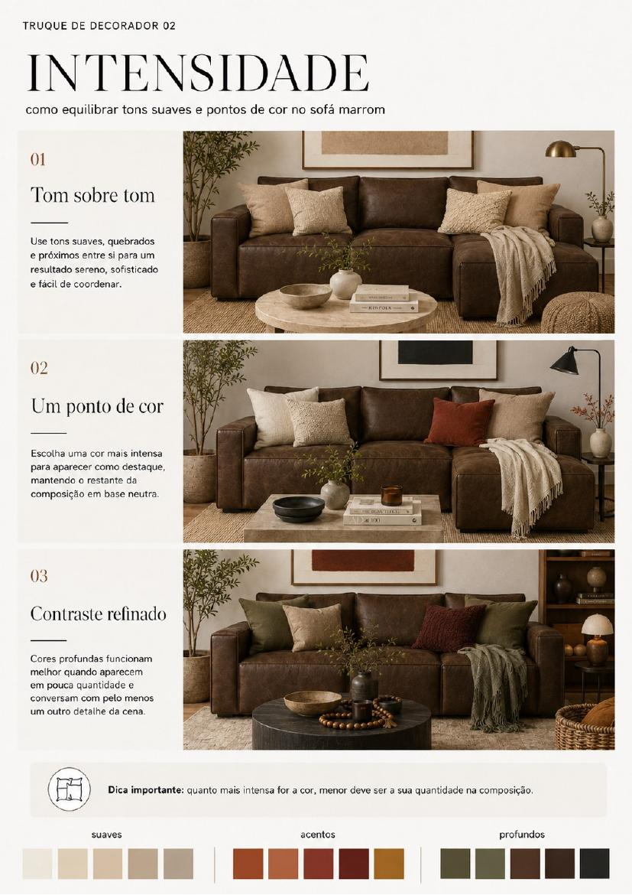
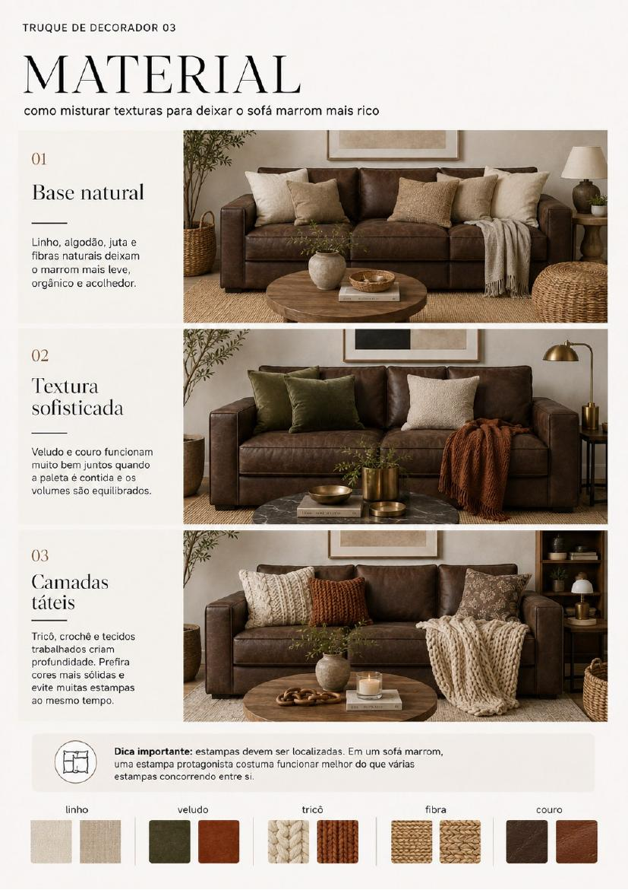

Guia do Sofá · Edição 01
Descubra o que combina com o sofá que você já tem.
Um guia visual para sofás marrom/café, off-white e tons de cinza.
Menos dúvida. Menos compra errada. Mais harmonia.
Comprar o guia →Seu sofá está bom. Mas a sala não conversa com ele.
Você compra um tapete bonito, mas ele não funciona com o sofá.
Escolhe almofadas, quadros e objetos isoladamente, tentando resolver a sala.
As peças agradam separadas. Juntas, ainda parecem sem direção.
Antes de trocar o sofá
O que falta pode ser direção.
O problema normalmente não é falta de peças. É não saber o que conversa com o sofá e com o conjunto. Cor, subtom, materiais, proporção e entorno mudam a leitura da sala.

Antes de investir na próxima peça, invista em saber se ela realmente combina com a sua sala.
Quero meu Guia do Sofá →As três famílias da Edição 01
Encontre o seu sofá.
01

Off-white

Tons de cinza
Guia do Sofá · Edição 01
Comece pelo sofá que você já tem.
Valor de lançamento
DeR$ 97
porR$ 47
Um erro na decoração pode custar muito mais do que R$ 47.
Checkout em preparação.
Um olhar por dentro
Direção visual, não inspiração solta.
Uma pequena amostra da linguagem. O raciocínio completo permanece reservado para a Edição 01.



Decorar não é comprar mais.
É combinar melhor.
Menos tentativa. Mais segurança para aproveitar o sofá existente e criar harmonia.
A coleção continua.
Novas cores e novas combinações estão sendo preparadas para futuras edições.
02Em breve
Edição 02Em breve03Em breve
Edição 03Em breveAntes de escolher.
O que é o Guia do Sofá?
Um guia visual para fazer escolhas mais seguras a partir do sofá que você já possui.
Para quais sofás ele serve?
Marrom ou café, off-white e diferentes tons de cinza.
Preciso trocar meu sofá?
Não. A proposta é combinar melhor a sala com o sofá existente.
É uma consultoria?
Não. É uma direção visual aplicável, sem análise individual ou projeto.
Como recebo?
O PDF será entregue digitalmente após a confirmação da compra.
É digital?
Sim. Não existe envio de produto físico.
Preciso entender de decoração?
Não. O conteúdo foi criado para ensinar mostrando.
Sua escolha protegida
7 dias de garantia.
Conheça o Guia do Sofá com tranquilidade. Se entender que ele não é para você, solicite a devolução do valor dentro de 7 dias após a compra.
Menos dúvida na sua próxima escolha.
Não se trata de comprar mais. Trata-se de comprar melhor, com direção.
De R$ 97por R$ 47
Compra em preparação.